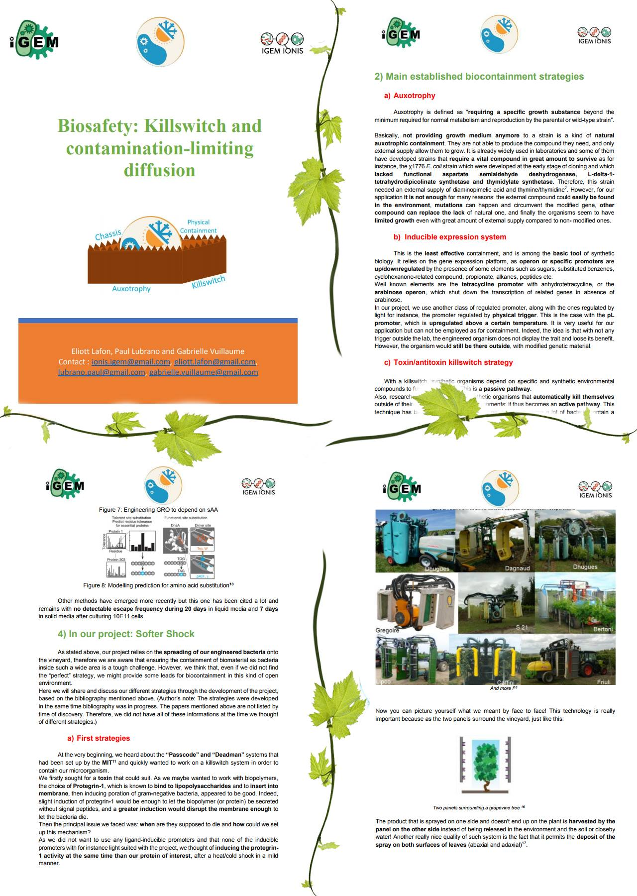

To make our solution work, we are going to spread genetically modified organisms on crops in an open environment. This idea itself makes our project difficult and exposed to many objections. While we are already aware of the risks Softer Shock implies, we tried our best to maximise the biosafety of our project. To do so, in the biosafety aspects of Softer Shock, we chose to create a four walls fortress, which means a multi-layer strategy.
Our first wall is the auxotrophy, and we aim at engineering our bacteria so that they become dependent to a specific component. Here, we chose to make them depend to a 21st amino acid, which is not found in nature. Unless it has an access to this synthetic amino acid, the bacterium dies : it is confined in the area where the amino acid is spread.
Our second wall is composed of a killswitch, to kill bacteria under certain inputs. It permits the avoidance of a microorganisms spreading. We chose to use the protegrin-1, which causes a membrane poration and so the cell death. Once its sequence is included in our bacteria genetic code with an arabinose operon, it would be activated in the presence of arabinose, making it easy for the farmers to kill the bacteria after harvesting.
We also thought of adding a DNAse coding sequence in our plasmid and an “anti-DNAse” coding sequence in the genomic DNA of our microorganism. If a DNA transfer occurs between a modified and a wild type bacteria, the wild type bacteria which does not contain any anti-DNAse would die.
For our third wall, we are actively looking for the most adapted chassis and we already have some tracks of naturally present bacteria on vine leaves and specific to the leaf environment. However, the perfect chassis does not exist, as if it extremely specific to the grapevines (so little present) a mass spraying could alter the biodiversity and on the contrary, if it is less specific the safety level would be lowered.
Our last wall is the physical containment. We decided to use the tunnel sprayer, in order to diffuse our product and to add some adjuvants to facilitate its use. This device is based on a “face to face” model in which each of the product dispenser face each other. It seems to be a good choice because the product that is sprayed on one side and doesn't end up on the plant is harvested by the panel on the other side. Also, it permits the deposit of the spray on both surfaces of leaves. The adjuvants would be a drift limitant, a bounce and shatter minimiser and a sticker and retention aid.
Find out our biosafety strategy in the next report !
